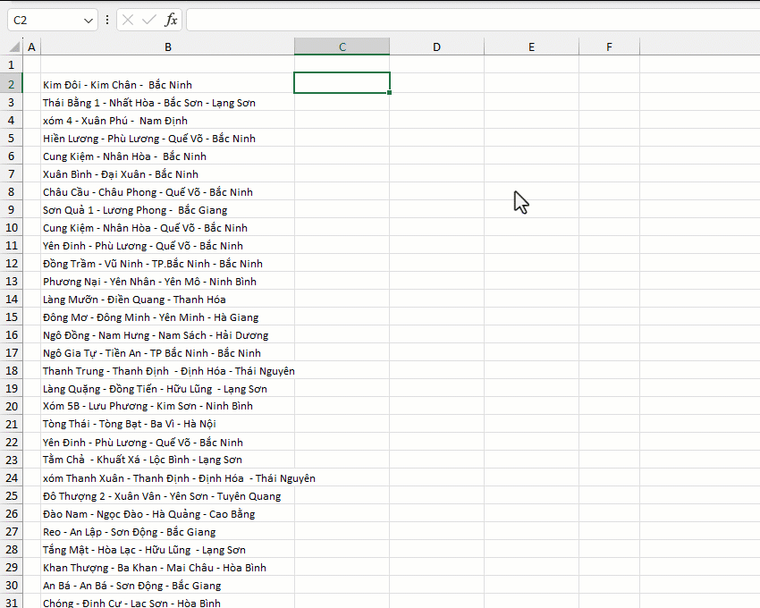

VD: Xác định tên xã (phường), tỉnh thành phố từ danh sách các chuỗi B:B
1. Mặc định hàm tìm kiếm tên chính xác hoặc tên viết tắt (vd: HCM -> Hồ Chí Minh).
1. Nếu [ignore_signed]=1 Hàm cho phép tìm kiếm tên không dấu (vd: Ha Noi).
2. Nếu [fuzzy]=1 Hàm cho phép tìm kiếm gần đúng với sai số cho phép không quá 2 ký tự (vd: Hà Chí Minh -> Hồ Chí Minh).
3. Có thể chỉ định luôn tên tỉnh/thành phố nếu biết trước.
4. Có thể tra cứu bao gồm tên đường phố (đã cập nhật cho các tỉnh/thành phố lớn).
5. Tên các đơn vị hành chính, đường phố có thể sáp nhập, tách mới hoặc đổi tên liên tục hàng năm, do đó khó có thể cập nhật được đầy đủ.
6. Trường hợp số liệu trả về chưa khớp, vui lòng report với fanpage/gmail để cập nhật số liệu mới cho đơn vị tỉnh thành đó.
Related function
INDEX.ADJ Thống kê thông số cho các phần tử liền kề bằng nhau (Adjacent equal) trong một mảng
GROUP Phân nhóm bảng dữ liệu dựa trên trường (cột) chỉ định, hỗ trợ tính toán tùy chỉnh.
Return to Home